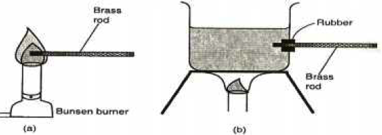
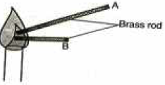

Thermal conductivity in materials depends on the following factors;
- Temperature difference ( Ѳ) between the ends of the conductor.
- The length of the conductor.
- The cross-sectional area (A) of the conductor.
- The nature of the material (K)
Temperature difference
To demonstrate how temperature difference ( Ѳ) affects thermal conductivity

Observation
The rod placed in the flame becomes too hot faster than the one placed in the boiling water.
Explanation
The rate of heat flow (thermal conduction) increases with increase in temperature.
Thermal conduction in metals is by two mechanisms i.e. vibration of atoms and by free electrons.
A high temperature difference between the ends of the conductors sets the atoms into vibrations more vigorously and the vibrations are passed more quickly to the cooler end. The electrons on the other hand gain a lot of kinetic energy causing them to spread the heat energy to cooler parts of the metal within a short time.
Length of the conductor
Consider the set up below.

Observation
The end of metal B held in hand becomes too hot earlier than metal A. Thermal conductivity increases with decrease in length.
Explanation
Heat travels within a conductor along imaginary lines called lines of heat flow.
These lines diverge from the hot end as shown.

The graph of temperature (Ѳ) against length (l) is as shown.

When the heat energy gets to the surface of the metal it is easily lost to the surroundings.
The lines of heat are more divergent near the hot end than they are far away. (position A and B).
The slope of the graph in the above figure is steeper at A (near the hot end) than at B further away. This indicates that the shorter the length of the material, the higher the rate of heat flow.
The cross-sectional area of the conductor
Consider the set up below,

Observation
The end of metal A held in the hand becomes too hot earlier than metal B.
Thermal conductivity increases with increase in area of cross-section of the conducting material.
Explanation
The number of free electrons per unit length of the thicker length A is more than those in the thin metal rod B.
The nature of the material K
Different materials have different strength of force bonding the atoms within the material. The number of free electrons also differs from one material to another material.
Materials with many free electrons are better conductors of heat e.g. copper has more free electrons than iron.
LAGGING
This is the covering of good conductors of heat with insulators to reduce heat loss through surface effects. For example, iron pipes carrying hot water from boilers are covered with thick asbestos material.
The figure below shows lines of heat flow in a lagged metal bar.
A graph of temperature (ѳ) against the position along the lagged conductor is as shown below.